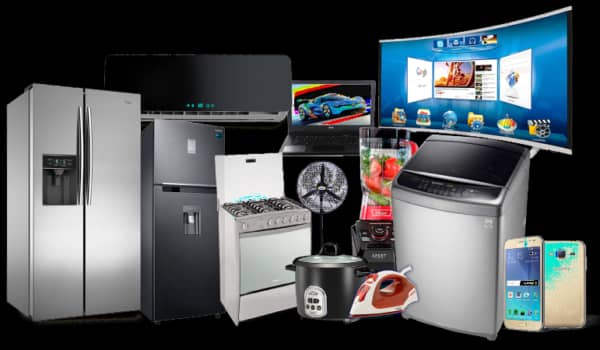
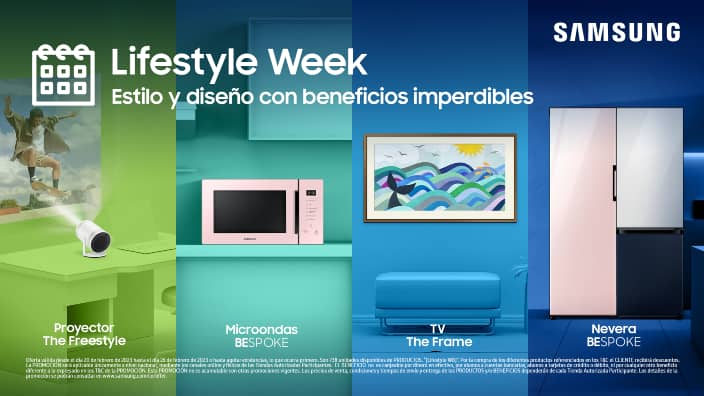

MUNDO ELECTRONIC
un mundo de opciones para ti
Todo lo que buscas par tu hogar, aqui lo encontraras
Contamos con los mejores productos y de las mejores marcas; ademas tenemos alianzas con IVOO, Si deseas ver el catalogo completos de los productos que tenemos disponibles, te recomiendo hacer clip en el siguiente enlace
Buscas Smartv,Buscas Laptops,
Buscas Smartphones.
 
Smartv
Cómo funciona una Smart TV Una smart TV o televisión inteligente es una televisión con la que tenemos acceso a internet. En ella se pueden ejecutar distintas aplicaciones que funcionan gracias a la conexión a internet y con una comodidad de visión mayor que si empleasemos un PC, Tablet o smartphone. Con ella se puede disfrutar en todo momento los contenidos en la web de una forma mucho más sencilla y cómoda. Pero para poder disfrutar de todo esto, es necesario saber cómo usarla. Podras encontrar una gran variedad en el siguiente enlace gracias a nuestros aliados Siragon Venezuela
Laptops
La laptop es un equipo compuesto por una pantalla líquida, alimentada con baterías o corriente alterna, puede durar más de dos horas de funcionamiento, es liviana (usualmente pesa menos de 12 libras), presenta teclado integrado, panel táctil para manejar el puntero en lugar del ratón, entre otras características. Como es una verdadera computadora personal, no está para dejarla en manos de otras personas. La laptop es ideal para quienes desean trasladar su trabajo de la oficina al hogar y viceversa, para quienes realizan presentaciones o son viajeros frecuentes, para los estudiantes de universidad, investigadores, personas que viven o trabajan oprimidos en espacios reducidos, etc.. Podras encontrar una gran variedad en el siguiente enlace gracias a nuestros aliados Siragon Venezuela
Smartphones
Un smartphone es un teléfono móvil o celular que funciona con un sistema operativo móvil (OS) y funciona como una mini computadora. Los smartphones también funcionan como reproductores multimedia portátiles, cámaras digitales, videocámaras y dispositivos de navegación GPS. El sistema operativo equipa el dispositivo con capacidades informáticas avanzadas, ejecuta aplicaciones y permite que el dispositivo realice las siguientes funciones básicas enlace gracias a nuestros aliados Siragon Venezuela
Conoce mas de los productos que tenemos para ti
lista de nuestros productos por categorias:
- Televisores
- Linea blanca
- Linea marron
- Electrodomesticos para tu cocina
- Equipos de audio y video
- Telefonos y tablets
- Computadoras y laptos
- Consolas de video juegos
- Articulos de decoracion